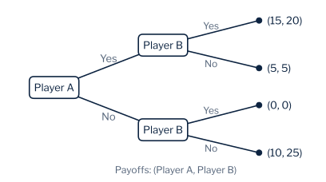
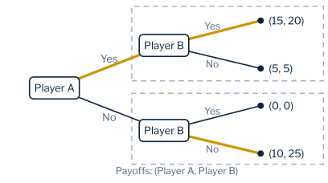
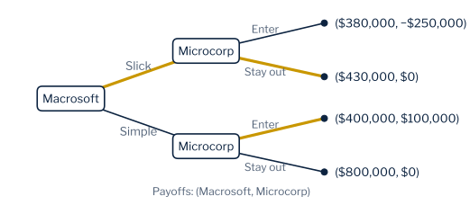

Lesson 11
FIN 30210 Managerial Economics
Jason R. Reed, PhD, University of Notre Dame
Players
Firms or individuals who maximize profit or utility. The analysis can change if players are risk loving rather than risk averse.
Actions (strategies)
Players choose an action in a one-shot game, or a set of strategies in a repeated game: \(S = \{\text{Rock}\}\) or \(S = \{\text{Rock, Paper}\}\).
Payoffs
Profit, money, utility, prison time, winning the game, getting the phone number. The expected value is \(E(x) = \sum_{i=1}^{n} x_i p_i\), where \(p_i\) is the probability that \(x_i\) occurs. In a zero-sum game, one player wins exactly what the other loses.
Simultaneous games Players choose strategies at the same time, with full information about the payoffs: war (the card game), rock-paper-scissors, chicken.
Sequential games Players take turns choosing strategies, with full information about the payoffs: chess, checkers, Monopoly.
One-shot games Simultaneous or sequential, but played only once. Don’t confuse this with a single strategy or action.
Repeated games Simultaneous or sequential, but played more than once. Running a business is more like a mix of simultaneous and sequential repeated games.
Strictly dominant strategy A strategy whose payoff is always better, whatever the opponent chooses. For example: always telling your spouse they look beautiful.
Nash equilibrium (NE) An outcome where no player can improve their payoff by switching strategies.
Watch the clip from the game show Golden Balls.
A payoff matrix has three parts: players, actions, and payoffs.
| Abraham \ Nick | Split | Steal |
|---|---|---|
| Split | 6,800; 6,800 | 0; 13,600 |
| Steal | 13,600; 0 | 0; 0 |
Payoffs in dollars: (Abraham; Nick).
Two men are caught breaking into a store and held separately for interrogation. Each can snitch or stay quiet.
Each player has beliefs about what the other will do but doesn’t actually know, and must decide what to do in each case.
Set up the payoff matrix. What is the Nash equilibrium?
| P1 \ P2 | Stay quiet | Snitch |
|---|---|---|
| Stay quiet | −1, −1 | −5, 0 |
| Snitch | 0, −5 | −3, −3 |
Nash equilibrium Joint best outcome
Rows are Prisoner 1, columns Prisoner 2.
Payoffs are years in prison, shown as negatives.
In the last round of a repeated game, there’s no more reason to cooperate. Each player knows it, and deviates to the equilibrium that’s best for them.
Two players choose Left or Right, twice. Payoffs are profit in millions of dollars.
With a grim trigger strategy, we need the one-shot Nash equilibrium (where to punish) and the cooperative outcome that isn’t a Nash equilibrium.
| P1 \ P2 | Left | Right |
|---|---|---|
| Left | 10, 10 | 12, 9 |
| Right | 9, 12 | 11, 11 |
The same matrix is played in Game 1 and Game 2. Payoffs: (Player 1, Player 2).
What is the Nash equilibrium of each game? What outcome maximizes joint profit?
| P1 \ P2 | Left | Right |
|---|---|---|
| Left | 10, 10 | 12, 9 |
| Right | 9, 12 | 11, 11 |
Nash equilibrium Joint-profit maximum
By backward induction, looking at the last game first, a player can make the best Game 1 choice.
| P1 \ P2 | Left | Right |
|---|---|---|
| Left | 20, 20 | 22, 19 |
| Right | 19, 22 | 21, 21 |
Combined Game 1 and Game 2 payoffs.
The Nash equilibrium is still (Left, Left). To change the outcome, change the payoffs: create an incentive to cooperate.
Suppose both players earn a bonus of 2 at the end if they cooperate in Game 1 by choosing Right.
| P1 \ P2 | Left | Right |
|---|---|---|
| Left | 20, 20 | 22, 19 |
| Right | 19, 22 | 23, 23 |
The bonus is enough to create a new Nash equilibrium at (Right, Right): neither player gains by switching.
Now each player chooses Left, Middle, or Right, again over two stages. Payoffs are profit in millions.
| P1 \ P2 | L(2) | M(2) | R(2) |
|---|---|---|---|
| L(1) | 1, 1 | 5, 0 | 0, 0 |
| M(1) | 0, 5 | 4, 4 | 0, 0 |
| R(1) | 0, 0 | 0, 0 | 3, 3 |
| P1 \ P2 | L(2) | M(2) | R(2) |
|---|---|---|---|
| L(1) | 1, 1 | 5, 0 | 0, 0 |
| M(1) | 0, 5 | 4, 4 | 0, 0 |
| R(1) | 0, 0 | 0, 0 | 3, 3 |
Nash equilibrium Cooperative target
The strategy: if both play Middle in Game 1, reward each other with \((R, R)\) in Game 2. If anyone cheats, punish with \((L, L)\).
Player 1, when Player 2 plays M(2) Deviating to L(1) earns 5 in Game 1, then the punishment L(1) earns 1: 6 in total.
Cooperating with M(1) earns 4, then the reward R(1) earns 3: 7 in total.
Player 2, when Player 1 plays M(1) Deviating to L(2) earns 5, then the punishment L(2) earns 1: 6 in total.
Cooperating with M(2) earns 4, then the reward R(2) earns 3: 7 in total.
| P1 \ P2 | L(2) | M(2) | R(2) |
|---|---|---|---|
| L(1) | 2, 2 | 6, 1 | 1, 1 |
| M(1) | 1, 6 | 7, 7 | 1, 1 |
| R(1) | 1, 1 | 1, 1 | 4, 4 |
Play a repeated, sequential game in class on the Veconlab experimental economics site.
\[ E(x) = \sum_{i=1}^{n} x_i p_i \]
A sequential game, like the centipede game, is drawn in extensive form rather than normal (matrix) form.



Adapted from the course textbook, Chapter 13.
That’s the course
FIN 30210 Managerial Economics